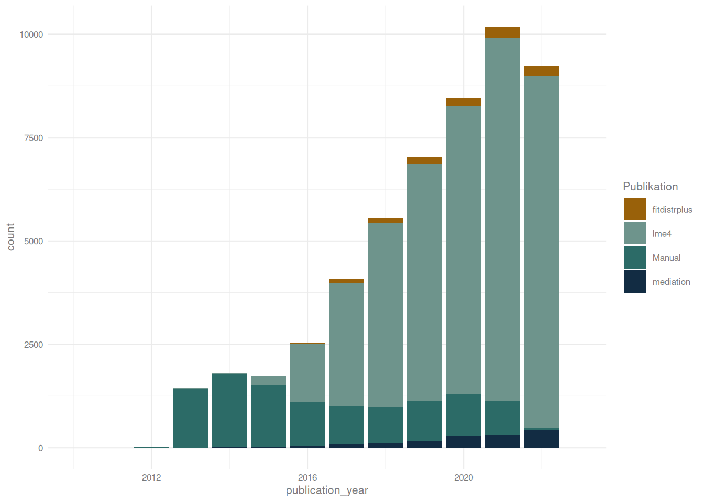
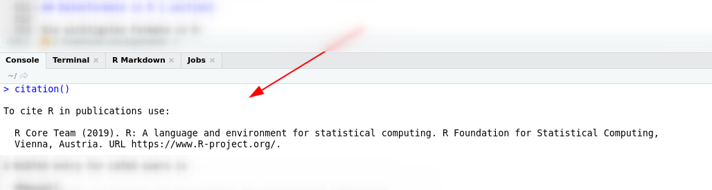
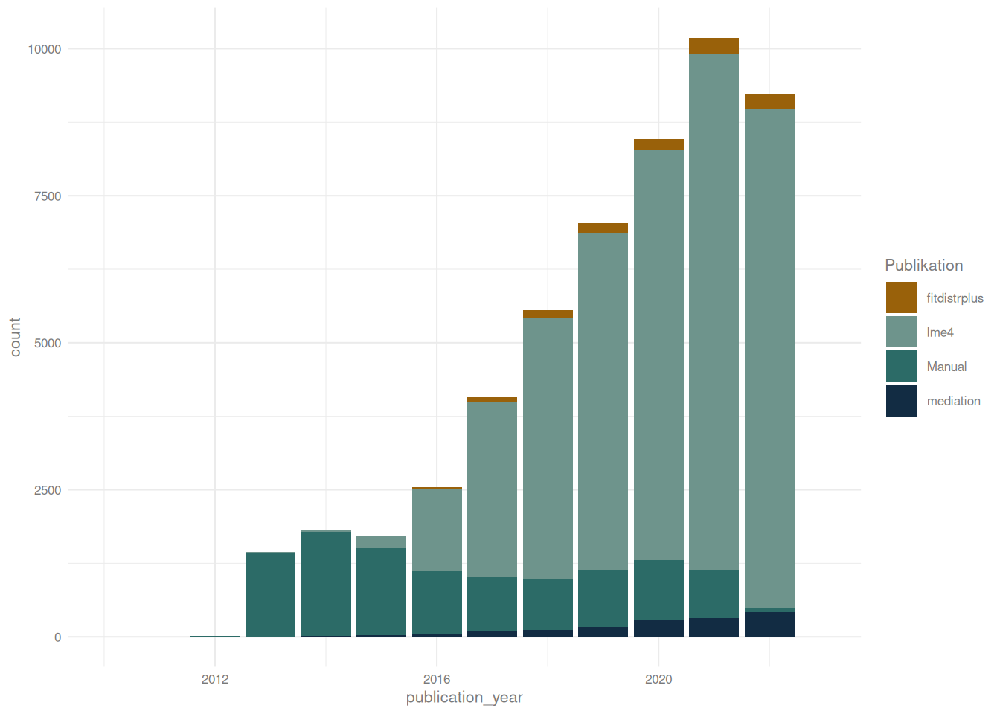
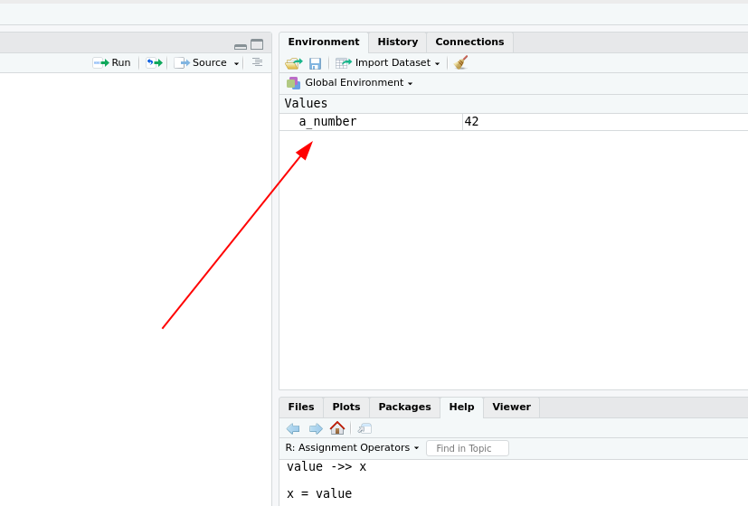
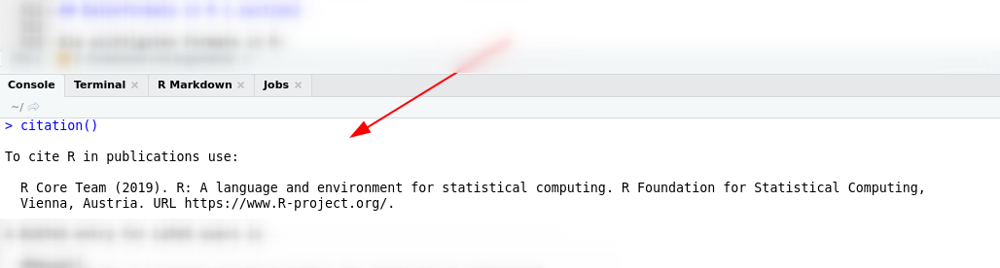
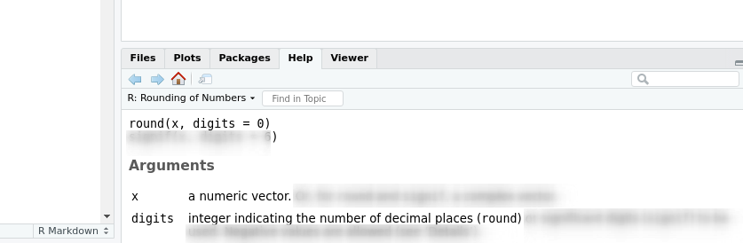

citation() gibt in der Konsole aus, wie man R am Besten zitiert.

R ist beliebt!
Das R-Manual (R Core Team, 2023) hatte auf OpenAlex zum Zeitpunt der Erstelung dieses Skripts 10464 Zitationen gelistet.
Die drei Paper aus diesen Zitaten mit den wiederum meisten Zitaten sind alles Paper, die R-Pakete vorstellen. Namentlich sind das lme4 (Bates et al., 2014), fitdistrplus (Delignette-Muller & Dutang, 2015) und mediation (Tingley et al., 2014). Diese drei Paper wurden in Summe weitere 51330 mal zitiert.
Über die Zeit zeigt sich ein eindeutiger Trend:

Und dabei sind alle möglichen empirischen Disziplinen unter den Outlets vertreten, in denen R am häufigsten zitiert wurde:
Das zentrale Argument:
Im Gegensatz zu anderen gängigen Statistik-Tools ist R Open Source.
Damit kommt einher, dass R kostenlos und vor allem von der Community erweiterbar ist. Dazu kommt das CRAN (Comprehensive R Archive Network), über das mit einem sehr rigorosen1 Review-Verfahren Pakete unproblematisch zur Verfügung gestellt werden.
1 Wie auch am häufigen Nölen aus der Community abzulesen ist.
Das CRAN habt Ihr bereits benutzt - mit install.packages() greift Ihr auf dieses Paket-Archiv zu und ladet Pakete runter.
Posit stellt hier mit einer shiny-Demo sehr anschaulich dar, wie beliebt cran-Pakete und damit R sind.
Mausnavigierte IDEs wirken erstmal intuitiver2
Man braucht vor allem am Anfang (ein bisschen) Frustrationstoleranz bis genug Übung besteht
Viele Beiträge von vielen Community-Mitglieder:innen heißt natürlich auch viele Ideen wie Probleme richtig gelöst werden. Die Syntax ist zwischen Paketen also oft uneinheitlich.
2 Jamovi versucht hier die Lücke zu schließen.
Man findet sehr schnell Hilfe.3
Vor allem in den letzten fünf Jahren haben sich Projekte herausgebildet, die versuchen viele der größten Frustrationen an R abzustumpfen, z.B. Jamovi und das tidyverse.
3 Auf stackoverflow gibt es zum Beispiel eine sehr aktive Gruppe an R-Usern
Die Absoluten Grundlagen der R Syntax sind:
Zuweisungen und das environment
Funktionen und Argumente
Indizierung
Datenformate
Unter Zuweisung ist erstmal nichts anderes zu verstehen, als einem Zwischenergebnis einen Namen zu geben, um es wiederverwenden zu können.
Auch wenn es andere Möglichkeiten gibt, ist die Folgende die am besten lesbare:
a_number <- 42Die Zahl 42 ist jetzt für weitere Verwendung im Environment abgelegt:

Und wie die Zahl alleine weiterzuverwenden:
42^2[1] 1764a_number^2 ## äquivalent[1] 1764Jede dieser in grau unterlegten Zeilen nennt man auch eine Anweisung. R wird in der letzten Zeile angewiesen, den ‘Inhalt’ von a_number zu quadrieren. Dabei wird der dahinter durch das #-Symbol eingeleitete Kommentar ignoriert.
Dabei ist das Environment in jeder Session neu, wenn ich RStudio schließe und neu aufmache, wird also eine neue, leere Umgebung geöffnet4.
4 Und direkt wieder befüllt, wenn man das unter Global Options -> General -> Workspace die Optionen nicht angepasst hat.
5 Dazu zählen in R auch die Funktionen
Und nicht nur von uns erstellte Objekte sind im Environment vorgehalten, alle anderen aufrufbaren Objekte 5 sind in Environments zu finden. Um z.B. Pakete nutzen zu können, müssen diese erst in die Umgebung geladen werden - dazu aber später mehr.
Der Großteil des in R erstellten Codes besteht aus Funktionen.
Jede Funktion ist eine Sammlung an Anweisungen, die nacheinander augeführt werden sollen.
citation() ist ein sehr einfaches Beispiel für eine solche Funktion.
Was macht citation()?
citation() gibt in der Konsole aus, wie man R am Besten zitiert.

Die meisten Funktionen kommen aber nicht ohne Argumente aus.
Argumente können in obligatorische und optionale unterteilt werden.
Wenn man keins oder ein falsches obligatorisches Argument übergibt, zeigt R einen Fehler an!
optionale Argumente nennt man die, für die die Autoren der Funktion einen Standard vorgesehen haben. Das sind dann meist Stellschrauben, an denen das gewünschte Ergebnis genauer festgelegt werden kann. Werden diese Argumente nicht explizit gesetzt, wird einfach der Standard verwendet.
Ein Beispiel für eine Funktion, die obligatorische und optionale Argumente annimmt ist round().
Auf der Hilfeseite von round() finden wir folgendes6:
6 Die Hilfeseite lässt sich entweder über die grafische Oberfläche oder mit help('round') aufrufen.

Was ist hier das obligatorische Argument und wie erkennt man es?
x ist hier das obligatorische Argument (kein Standard durch ein =) angegeben
Wenn man round ohne ausprobiert, gibt es einen Fehler:
round()Error in eval(expr, envir, enclos): 0 arguments passed to 'round' which requires 1 or 2 argumentsWen man eine Zahl übergibt, wird auf ganze Zahlen gerundet:
round(3.1415)[1] 3Das optionale Argument digits, ermöglicht dann, die gewünschte Anzahl der Nachkommastellen anzugeben:
round(3.1415, digits = 2)[1] 3.14Sowohl 3.1415 als auch digits = 2 setzen Werte für Argumente!
Da die Funktion aber die zu rundende Zahl x an erster Stelle erwartet, ergibt der Aufruf das gewünschte Ergebnis.
R braucht also nicht unbedingt die Argumentnamen, wenn keine da sind wird die Reihenfolge interpretiert.
round(3.1415, 2) ## funktioniert, digits wird an zweiter Stelle erwartet[1] 3.14Was versucht R, wenn ich die folgende Anweisung ausführe?
round(2, 3.1415)R rundet die Zahl 2 auf 3.1415 (also 3) Nachkommastellen.
round(2, 3.1415) ## funktioniert, aber vielleicht nicht wie erwartetWenn man Argumente ohne Namen in falscher Reihenfolge übergibt, gibt es keine Fehlermeldung aber Blödsinn!
Einzelne Zahlen benutzt man aber ja quasi nie. Deswegen hier eine sehr praktische Funktion:
1:3[1] 1 2 3Neben den klassischen Funktionen, die durch ein Codewort und Klammern erkenntlich sind, gibt es in R noch eine Reihe Operatoren, die auf den ersten Blick keine Funktionen sind.
Hier wird aber eigentlich `:`(1,3) ausgeführt, das Funktionsschema gilt also auch hier. `:`(1,3) ist nur schrecklich schlecht lesbar und viel zu viel zu tippen.
Da wir jetzt erste Vektoren mit mehr als einem Element erstellen können, gehen wir zu nächsten Part, der Indizierung über.
In R lassen sich Elemente eines Objektes auf viele verschiedene Arten aufrufen, am Ende laufen diese aber auf den [], den [[]] und den $-Operator hinaus.
Für Vektoren reicht erstmal der []-Operator.
Das einfachste Beispiel ist der Versuch, den 3. Wert aus einer Zahlenreihe ausgeben zu lassen.
Dafür erstellen wir zuerst die Zahlenreihe von 10 bis 15 und speichern diese im Environment
Wie mache ich das?
eine_reihe_von_zahlen <- 10:15Jetzt kann ich den []-Operator benutzen, um den 3. Wert anzeigen zu lassen:
eine_reihe_von_zahlen[3][1] 12Und fertig. So einfach.
Der []-Operator kann aber noch viel mehr. Ich kann zum Beispiel eine Sequenz übergeben, um eine Reihe von Zahlen ausgeben zu lassen:
eine_reihe_von_zahlen[1:3][1] 10 11 12Der erste Wert ist die 10! der Index für die erste Stelle ist also die 1!
Eine weitere Möglichkeit ist die ausschließende Indizierung. Mit einem - gibt man an, dass einen alle außer der angegebenen Stelle interessieren.
eine_reihe_von_zahlen[-3][1] 10 11 13 14 15Der []-Operator kann außerdem benutzt werden, um über logische Operatoren Werte zu indizieren.
Die einfachsten sind hier:
1 == 2 ## ist 1 gleich 2
1 != 3 ## ist 1 ungleich 3
1 < 4 ## ist 1 kleiner als 4
2 >= 1 ## ist 2 größer gleich 1[1] FALSE
[1] TRUE
[1] TRUE
[1] TRUEDiese Operatoren kann ich auch auf Vektoren anwenden:
eine_reihe_von_zahlen > 11[1] FALSE FALSE TRUE TRUE TRUE TRUEUnd kann das Ergebnis auch mit dem []-Operator kombinieren:
eine_reihe_von_zahlen[eine_reihe_von_zahlen > 11][1] 12 13 14 15Bei der letzten Operation haben wir zwei Datenformate kennengelernt:
logical, eine binär-logische Angabe und
numeric, alle ganze und (darstellbare) rationale Zahlen
Jetzt kennen wir schon 2 der 3 wichtigsten einfachen oder atomic Datenformate in R
Neben Zahlen muss R aber natürlich auch Text verarbeiten können. Dies geschieht über das character-Datenformat.
Wie könnte ich versuchen, ein character-Objekt mit dem Inhalt “Ich bin ein String” anzulegen?
ein_toller_character <- "Ich bin ein String"Diese einfachen Datenformate haben eine Hierarchie, die man so darzustellen versuchen könnte:
logical < numeric < character
Am deutlichsten wird das beim Benutzen einer der wichtigsten Funktionen in R: c() 7 - die Vektor-Funktion. Mit ihr können wir Werte zu Vektoren zusammenfügen und zu bestehenden Vektoren hinzufügen.
7 ‘c’ ist hier übrigens kurz für concatinate
logical_vector <- c(TRUE, TRUE, FALSE)
logical_vector[1] TRUE TRUE FALSEc(logical_vector,1)[1] 1 1 0 1Die logischen Werte wurden in Zahlen umgewandelt.
Was passiert wohl, wenn wir eine 1 und einen character hinzufügen?
c(logical_vector,1,'ein character')[1] "TRUE" "TRUE"
[3] "FALSE" "1"
[5] "ein character"Die logischen Werte und die Zahl wurden in character umgewandelt
Die atomics haben mit logical < numeric < character eine klare Hierarchie!
Rückgängig machen lässt sich das durch as.logical, as.numeric und as.character. Aber Vorsicht, so können auch leicht fehlende Werte, durch NA gekennzeichnet erzeugt werden:
ein_umzuwandelnder_vektor <- c('a',1,15,TRUE)
as.numeric(ein_umzuwandelnder_vektor)[1] NA 1 15 NAas.numeric(ein_umzuwandelnder_vektor)[1] NA 1 15 NAWarum fehlt auch der letzte Wert?
Weil das TRUE inzwischen ein character ist.
ein_umzuwandelnder_vektor[1] "a" "1" "15" "TRUE"Natürlich gibt es auch komplexere, mehrdimensionale Datenformate in R, um die geht es im nächsten Teil.